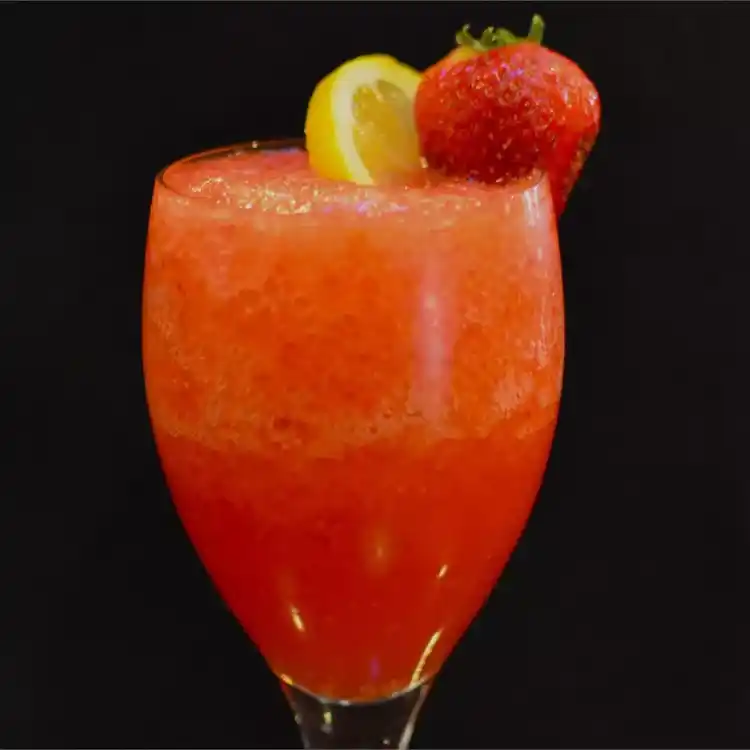

Strawberry Lemonade Slushie

Only 4 ingredients and a cinch to make a summer drink that is sure to represh refresh and delight.
You're four ingredients and a few pulses in a blender away from a refreshing slushie. As is, it's kid-friendly, but adults could add some vodka or tequila for a boozy kick.
Ingredients
You will be needing:
- ½ cup water
- cup dry lemonade-flavored drink mix
- 3 cups ice cubes
- 1 cup strawberries
Steps
- Stir water and lemonade mix together in a cup until the mix dissolves.
- Combine ice cubes and strawberries in a blender.
- Pour lemonade mixture into the blender.
- Blend on high for 10 seconds.
- Stop blender and stir with a spoon.
- Blend again until smooth, about 5 seconds more.
Back to home